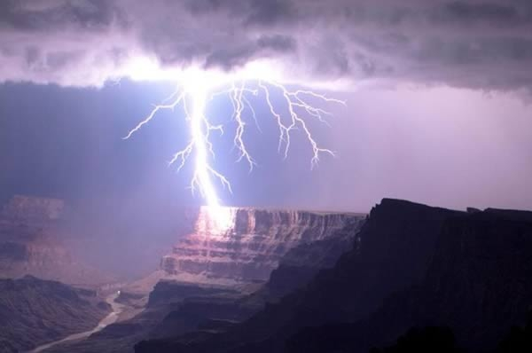
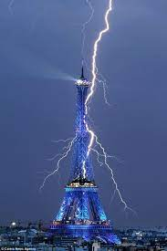

Trăsnetul este o descărcare electrică disruptivă care se produce între nor și pământ și poate fi negativ sau pozitiv. Producerea unui trăsnet este însoțită de fulger și tunet. Decalajul dintre observarea fulgerului și auzirea tunetului se datorează diferenței dintre vitezele de propagare ale celor două unde, luminoasă de circa 300.000 km/s și acustică (sonoră) de circa 332 m/s (la 0°C și presiunea de 1 atmosferă). Din această cauză există un decalaj de timp între recepționarea vizuală (fulgerul) și auditivă (tunetul) a trăsnetului. Acest decalaj crește cu cât trăsnetul este mai departe de observator. Trăsnetul este o descărcare electrică care restabilește echilibrul electric între nor și pământ. Tensiunea între un nor și pământ a fost măsurată la câteva zeci de milioane de volți. Aerul uscat are o putere de străpungere de circa 3 milioane de volți/metru care ar duce (considerând lungimea trăsnetului de 1-2 km) la o tensiune mult mai mare decât cea măsurată. La nivel mondial, trăsnetul provoacă zeci de mii de victime umane în fiecare an.
Trăsnetul negativ (cel obișnuit) se produce între baza norului și pământ, trăsnetul pozitiv între partea superioară a norului și pământ. Deoarece trăsnetele pozitive lovesc pământul într-o zonă care se poate afla până la zece kilometri (sau mai mult) distanță de baza norului de furtună de origine, acestea au fost numite trăsnete din cer senin. În plus, trăsnetele pozitive au o energie mult mai mare decât cele negative (vedeți mai jos).Numărul mediu de trăsnete pe kilometru pătrat pe an în lume.
Protecția împotriva trăsnetului este dată de paratrăsnet, un dispozitiv inventat la jumătatea secolului al XVIII-lea de către Benjamin Franklin. Majoritatea oamenilor loviți de trăsnet sunt surprinși de furtună într-un loc expus sau se află în imediata vecinătate a unui copac lovit de trăsnet.
Avioanele sunt protejate cu un dispozitiv numit în engleză discharge wicks. Acestea sunt elemente metalice ascuțite pe aripi care minimizează sarcina statică ce se acumulează pe suprafața metalică a avionului în zbor.
Producerea unui trăsnet este însoțită de fulger și tunet. Decalajul dintre observarea fulgerului și auzirea tunetului se datorează diferenței dintre vitezele de propagare ale celor două unde, luminoasă de ca. 300.000 km/s și acustică (sonoră) de ca. 332 m/s (la 0 °C și presiunea de 1 atmosferă). Din aceasta cauză există un decalaj de timp între recepționarea vizuală (fulgerul) și auditivă (tunetul) a trăsnetului. Acest decalaj crește cu cât trasnetul este mai departe de observator. Distanța în kilometri până la locul lovit de trăsnet se poate afla împărțind numărul de secunde dintre observarea fulgerului și auzirea tunetului la 3. De exemplu, dacă sunt 9 secunde între fulger și tunet, trăsnetul a lovit la aproximativ 3 km depărtare. Chiar și așa, un canal prin care se descarcă o sarcină electrică (trăsnet) poate avea mai multe canale cât și extensii ale acestora ascunse în nor, ceea ce de multe ori le fac invizibile pentru observator. Acestea pot fi văzute atunci când are loc prima descărcare, de cele mai multe ori în cazul trăsnetelor negative, fiind iluminate odată cu canalul principal prin care s-a descărcat trăsnetul. Așadar, pentru o mai bună calculare, continuați să numărați până auziți un sunet puternic, asurzitor și specific care deseori este însoțit de o vibrație (dacă sunteți suficient de aproape).
Benjamin Franklin a demonstrat în anul 1752, cu ajutorul unui zmeu de hârtie, prezența unei sarcini electrice în nori de furtună (observand încărcătura electrică a funiei umede cu care ținea zmeul).
Cercetări ulterioare au stabilit că, în nori de furtună numiți Cumulonimbus (nimbus cumulus), nori în care cu o probabilitate mare vor lua naștere trăsnete, curenții de aer repartizează inegal gheața și apa în interior. Prin frecarea straturilor norului se formează spații cu încărcătură (ionică) electrostatică negativă și pozitivă. Zona de trecere dintre regiunile cu sarcini pozitive și negative au loc la înălțime mare și temperaturi între −10°C și −15°C, aici picăturile de apă din nor transformându-se în cristale de gheață. Stratul superior (de sus) al norului este în mod normal încărcat pozitiv, iar stratul inferior (de jos) negativ. Aceste sarcini induc la rândul lor sarcini de semn opus la suprafața pământului (vedeți figura). Atunci când instabilitatea dintre aceste două zone încărcate electric atinge maximul, formarea unui canal numit în engleză "stepped ladder", care are formă de scară în trepte (de unde și numele), începe să se formeze. Aceasta coboară cu rapiditate mare spre pământ.
Atunci când aerul este expus unei cantități semnificative de diferență de potențial, se formează un strimer. Atunci când câmpul electric este suficient de mare, electroni accelerați lovesc moleculele de aer cu suficientă energie pentru a le dezlipi de electroni, ionizându-i, iar electronii liberi lovesc mai multe molecule libere într-o reacție în lanț. Aceste avalanșe de electroni formează regiuni din aer ionizate și bune conductoare de electricitate, formând un câmp electric. Locul liber încărcat creat de aceste avalanșe dau naștere la un alt câmp electric. Acest câmp sporește creșterea a noi avalanșe într-o direcție particulară. Atunci regiunea ionizată crește rapid în acea direcție, creând o descărcare în formă de deget numită strimer.
Atunci când canalul trăsnetului este foarte aproape de pământ (30 metri), acești strimeri urcă cu rapiditate în sus de pe obiectele de pe pământ, pentru a întâlni canalul și a forma descărcarea. Un singur strimer va alege un singur canal, având loc trăsnetul în mai puțin de o secundă.
Deși fulgerul pare foarte gros și mare, în funcție de distanța observatorului față de acesta, în realitate trăsnetul nu este mai mare de 2-5 cm în diametru.
Trăsnetul este o descărcare electrică care restabilește echilibrul electric între nor și pământ (vedeți figura).
Tensiunea între un nor și pământ a fost măsurată la câteva zeci de milioane de volți. Aerul uscat are o putere de străpungere de cca. 3 milioane de volți/metru, care ar duce (considerând lungimea trăsnetului de 1-2 km) la o tensiune mult mai mare decât cea măsurată. Observații asupra trăsnetelor au stabilit că acestea sunt precedate de o descărcare prealabilă, în care aerul este ionizat într-o lavină electronică, rezultând o reacție în lanț, care creează un canal de aer ionizat pentru trăsnet cu o putere de străpungere de aproximativ 50 de ori mai mică decât a aerului ne-ionizat. Acest canal se formează în vecinătatea corpurilor proeminente de pe pămant, unde intensitatea câmpului electric este maximă. Descărcarea (sau descărcările) principală/e are/au loc exclusiv în lungul acestui canal de aer ionizat, de obicei în formă de zigzag. Există ipoteza că aerul este ionizat de radiațiile cosmice (Charles Thomson, 1925), deși aceasta explicație nu este acceptată de către toți cercetătorii. În prezent, cercetarea trăsnetelor continuă și utilizează mici rachete sau baloane metereologice de cercetare.
Într-o descărcare electrică normală, 90% din energia trăsnetului este convertită imediat în căldură, în timp ce mai puțin de 1% este convertită în sunet și restul în lumină.
Descărcarea prealabilă durează 0,01 s, urmată de cea principală de numai 0,0004 s, urmată la rândul ei, după o scurtă pauză (de 0,03 s - 0,05 s), de noi descărcări (în medie, 4 sau 5 descărcări principale sau propriu zise). Au fost observate până la 42 de astfel de descărcări succesive într-un trăsnet, cu un curent mediu de 20 000 amperi.
Datorită duratei foarte scurte a unui trăsnet, doar câteva microsecunde, intensitatea curentului electric poate atinge sute de mii de amperi, iar temperatura plasmei din interiorul acestuia poate depăși 28 000 °C.
Un trăsnet atinge în medie lungimea de 1 - 2 km. În zonele tropicale, unde umiditatea aerului e mai ridicată, trăsnetele pot ajunge la 2 - 3 km lungime. În nori s-au observat fulgere cu o lungime de 5 - 7 km, iar cu ajutorul radarului pentru trăsnete, unele care ating 140 km lungime.
Tensiunea unui trăsnet cu o lungime de 1 km este de aproximativ 100 milioane de volti. Sarcina totală care este descărcată într-un trăsnet este în medie de 5 coulomb. Cu o durată medie de aproximativ 30 de microsecunde, curentul mediu al unui trăsnet negativ este de aproximativ 100 000 A.
Energia totală descărcată este aproximativ 500 MJ.
Deoarece trăsnetele pozitive au lungimea mai mare și descarcă sarcini de pe suprafețe mai întinse, acestea au o energie mult mai mare decât cele negative. Trăsnetele pozitive sunt de obicei asimiliate furtunilor foarte puternice și intense (furtuni supercelulare).
Lungimea și, prin urmare, tensiunea sunt de aproximativ 10 ori mai mare decât a trăsnetelor negative
Sarcina descărcată este de aproximativ 100 de ori mai mare. Prin urmare frecvența de producere este de aproximativ 100 de ori mai mică, comparativ cu trăsnetele negative (mai exact 5 %).
Durata și curentul sunt ambele de aproximativ 10 ori mai mari.
Energia este de aproximativ 1000 de ori mai mare.
Trăsnetele pozitive pot fi identificate pe fotografii sau videoclipuri ușor, deoarece acestea sunt de obicei foarte luminoase în comparație cu celelalte tipuri de trăsnete și canalul principal nu se desparte în mai multe părți.
'Trăsnetele din cer senin' sunt de cele mai multe ori pozitive, dar pot fi și negative.
Astfel de trăsnete pot încălzi aerul până la 39,000 °C.
Trăsnetele reprezintă orice descărcare de sarcină electrică pozitivă sau negativă care are loc printr-un canal ionizat și care implică un nor (sau mai mulți) și pământul.
Trăsnetele de acest tip (uneori numite trăsnete care merg în sus) sunt un anume tip de trăsnete care sunt inițiate de o scară care merge în sus și care originează de pe un obiect de pe pământ (nu o scară care se propagă în jos și care originează în interiorul norului). Trăsnetele de la pământ la nor pot fi de asemenea negative sau pozitive în polaritate. Acestea pot fi de două tipuri (A și B) și pot fi ușor identificate pe fotografii sau videoclipuri prin identificarea tipului acestora (pornesc de la un obiect de pe pământ și merg în sus, despărțindu-se în două sau trei părti distinctive care sunt luminate alternativ, fie doar o singură parte).
Pe lângă tipurile clasice de trăsnete, mai există și alte fenomene sau variații ale acestora. Deși acestea sunt în esență tot trăsnete, sunt clasificate drept fenomene sau variații ale trăsnetelor, deoarece diferă într-o oarecare măsură de trăsnetele clasice. Vezi mai jos o detaliere amănunțită. Din moment ce acestea nu au loc în interiorul unui singur nor sau a mai multor nori și de cele mai multe ori implică și pământul, acestea au fost incluse la trăsnet, nu fulger.
Fenomen prin care canalul trăsnetului se răcește rapid după descărcare, dând impresia unei forme de șirag de mărgele. În realitate, toate canalele suferă acest fenomen, deoarece canalul se răcește rapid după descărcare. Acest fenomen poate fi observat doar dacă observatorul este aproape de canal.
După cum sugerează și numele, reprezintă o descărcare electrică care pornește din interiorul norului și se termină abrupt în aerul înconjurător acestuia. Deși toate trăsnetele reprezintă o oarecare terminație abruptă în aer ale canalului principal, ascunsă adânc în nor, acest fenomen poate fi observat cel mai bine când un canal pornește din interiorul norului și se termină abrupt în aer.
Acest fenomen reprezintă trăsnete care au loc fără ploaie, fiind cele mai comune trăsnete care produc incendii de vegetație. Acestea se produc în interiorul norilor Pyrocumulus, nori produși prin erupțiile vulcanice și care nu produc precipitații. Deși trăsnetele nu sunt deosebite de trăsnetele produse în interiorul norilor de tip Cumulonimbus, acestea sunt mai periculoase deoarece pot provoca incendii de proporții, neavând ploaie care să le oprească. Mecanismul de producere al trăsnetelor este același ca în cazul norilor de tip Cumulonimbus. Termenul este folosit în Australia, Canada și SUA.
Reprezintă fenomenul în care un trăsnet în prima descărcare iluminează și celelalte canale secundare, dând impresia că acesta se bifurcă în mai multe feluri.
Reprezintă un trăsnet care este prea departe ca tunetul să fie perceput de observator. Aceste trăsnete sunt deseori observate pe durata nopților toride de vară, de unde și numele. Tunetul se disipează înainte să ajungă la observator.
După cum sugerează și numele, acest fenomen are loc atunci când vântul afectează poziția și direcția canalului, făcându-l să se miște în stânga sau în dreapta, dând observatorului impresia de panglică. Fenomenul este cel mai bine observat in fotografii.
Reprezintă un trăsnet care rezultă dintr-o singură descărcare de scurtă durată, care, de cele mai multe ori, este foarte luminoasă și este adesea observată a avea mai multe ramuri sau extensii.
Deși contrar miturilor, trăsnetul nu lovește mereu locul cel mai înalt, metalele nu atrag trăsnetul, papucii de cauciuc nu ne protejează de curent, folosirea telefoanelor mobile nu ne cresc șansele de a fi loviți, trăsnetul lovește de două sau mai multe ori în același loc ș.a.m.d.
Trăsnetul este atras de obiectele de metal, căștile de telefon, telefoanele mobile sau orice alt obiect pe care îl purtăm, lângă care stăm, pe care stăm etc
În realitate, trăsnetul este un eveniment care are loc pe o scară foarte mare. De obicei, este produs la altitudini de 10-15 km adâncime în interiorul unui nor de tip cumulonimbus sau nor de furtună. Odată ce canalul sub formă de scară își începe traiectoria spre pământ, acesta se îndreaptă spre locul în care există instabilitatea cea mai mare dintre două locuri încărcate electric. Cu alte cuvinte, când cele două regiuni încărcate electric nu se mai pot ține deoparte una de cealaltă, începe formarea canalului în interiorul unui nor. Niciun obiect de pe pământ nu influenteaza acest fenomen.
Este adevărat că obiectele mari, cum ar fi turnurile mari, stâlpii foarte înalți, zgârie-norii sau alte clădiri înalte sunt lovite mult mai des de trăsnete, dar asta nu înseamnă că toate obiectele „atrag” trăsnetul. În realitate, aceste clădiri reduc foarte mult aerul izolator prin care trăsnetul trebuie să treacă pentru a se putea descărca și, cum calea mai rapidă și mai bună va fi aleasă mereu, trăsnetul lovește adesea în astfel de clădiri.
De asemenea, există un principiu, conform studiilor relativ recente, care arată că un obiect conductor (fie fier sau orice alt material care conduce electricitatea bine) poate 'influența' ținta finală a unui trăsnet doar dacă trăsnetul era oricum pe cale să apară pe o distanță egală cu înălțimea obiectului. Așadar, o umbrelă de 1 metru înălțime poate 'atrage' trăsnetul doar dacă acesta era pe cale să apară deja într-o rază de 1 metru.
Același principiu funcționează pentru absolut toate obiectele de pe pământ, atât timp cât obiectul în cauză conduce electricitatea.
În realitate, trăsnetul nu lovește mereu obiectul cel mai înalt. Conform celor menționate mai sus, clădirile, în particular foarte înalte, au o frecvență crescută al descărcărilor electrice în comparație cu alte clădiri mai mici, dar asta nu înseamnă că trăsnetul nu poate lovi și o clădire mică, o casă sau chiar un om dacă în jurul acestora se află clădiri sau obiecte mai înalte.
Au fost observate până la 23 de descărcări consecutive precedând prima descărcare (trăsnetul), toate prin același canal și toate într-o fracțiune de secundă. Așadar, trăsnetul poate lovi de mai multe ori în același loc. De fapt, cele mai multe trăsnete negative care lovesc pământul sunt urmate de două sau mai multe descărcări alternative care sunt diferite în intensitate și care pot produce tunete mai puternice decât trăsnetul inițial, făcând canalul să fie iluminat iar și iar ceea ce observatorul îl vede ca pe un bec care se stinge și se aprinde iar și iar (flicăre).
Dacă se afirmă că trăsnetul alege mereu calea mai ușoară, mai rapidă și mai bună conductoare spre pământ, atunci putem spune că da, trăsnetul ar lovi în teorie doar materialele bune conductoare. Însă, conform dovezilor adunate pe parcursul anilor, trăsnetul nu alege mereu doar materialul cel mai bun conductor. Dacă în locul în care trăsnetul urmează să se producă nu există un material bun conductor de electricitate, atunci trăsnetul va lovi într-un loc aleator. Faptul că în preajma descărcării electrice inițiale nu există un obiect conductor bun de electricitate nu înseamnă că trăsnetul nu va mai avea loc.
Adevărul este că trăsnetul lovește oriunde și în orice, neavând importanță materialul din care acesta este făcut sau locul în care acesta se află. Atunci când nivelul încărcăturii electrice a unei furtuni devine suficient de mare, trăsnetul va avea loc oricum, indiferent de locul în care se află furtuna. De fapt, apa care conține multe minerale este un conductor bun (apă folosită pentru consum și uz casnic). Există suficiente poze și dovezi cu trăsnete lovind apa și anual mulți oameni mor omorâți pe bărci fie pe râuri, mări sau oceane.
Anual, peste 24 000 de persoane își pierd viața după ce sunt lovite de trăsnet. Trăsnetul omoară mai mulți oameni decât tornadele și uraganele la un loc.
Trăsnetul produce anual pagube în valoare de 6-7$ miliarde doar în America. O treime din localurile și afacerile din America suferă pagube provocate de trăsnete în fiecare an.